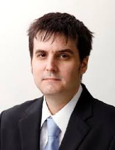
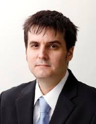

Main Stage/Plenary

8:15am Welcoming Guests:
Thom Barnhardt, Organiser and founder, CEE Digital Services Association.
8:30am - 9:15am Australia:
An insight into what Australian digital/tech buyers expect from CEE-based digital partners. An overview of Australia's digital market and opportunities: Mark Keough, Intrinsic Learning (Melbourne)
Panelists (2):
- Kirk Drage, CEO, LeapSheep (Adelaide)
- Marty Holden, CIO, FTS Group (Canberra)
9:15am - 10:00am Japan:
Digital and tech opportunities between Japan and CEE.
Presentation: Marc Einstein ITR (Tokyo)
Panelists (2): Hideki Ninomiya, Orient.
 

10:25am - 10:45am "Dissecting the Deal":
An inside look at a recent nearshoring deal got decided. How nearshoring or re-shoring is driving big demand for CEE digital services.
Moderator: Thom Barnhardt
Panelist: Trevor Coyne, Ops Talent
10:45am - 11:00am Networking Session #1:
meet 5 new people in 15 minutes (click on the "Networking" tab on Hopin's left-column navigation)
11:15am - 12:00 United Kingdom:
How CEE-based digital companies deliver strategic value to UK enterprises, SMEs, and ScaleUps.
Moderator: Michael Dembinski, British Polish Chamber of Commerce
Panelists (3): Angus Kidd, Advisory to Genpact, and Caspian. Russell Dalgleish, Chairman, Scottish Business Network.
12:00 - 12:40 Nordics/Benelux:
An insight into the corporate digital demands in Sweden, Norway, Denmark and Finland - and Benelux.
Panelists:
- Henri Jääskeläinen, Founder, Polar Night Software (Lodz)
- Ole Horsfeldt Partner, Gorrissen Federspiel. Representing one of the top Danish law firms, Ole’s focus is entirely on sourcing technology/digital services at scale.
12:45 - 13:25 Germany:
How German enterprises and SMEs increasingly view CEE digital firms as strategic partners. And what CEE firms can move up the value-chain.
- Dr. Lars Gutheil, German Polish Chamber of Commerce (AHK)
- Thomas Duschek, Managing Director, SAP Poland
- Presentation: "The urgent drive to digitalize European consumer goods enterprises", Oliver Trier, Itility, and former Director Global Digital Innovation, Friesland Campina.
- Artur Tomys, CEO, Equiqo

13:30 - 14:10 Fintech: Austria and Vienna
How CEE tech companies are finding Fintech expansion opportunities in western Europe.
Panelists:
- The Fintech ecosystem in Vienna, Aleksandar Vrglevski, Vienna Business Agency.
- The Fintech ecosystem in Poland, Michal Sas, FinTech Poland Foundation
- How Billon is expanding in western Europe, Jacek Figula, CCO, Billon Group
- Karolina Kaptur, AHP International
- Ewelina Tomczyk-Malec, City of Warsaw
- Piotr Paradowski, City of Warsaw